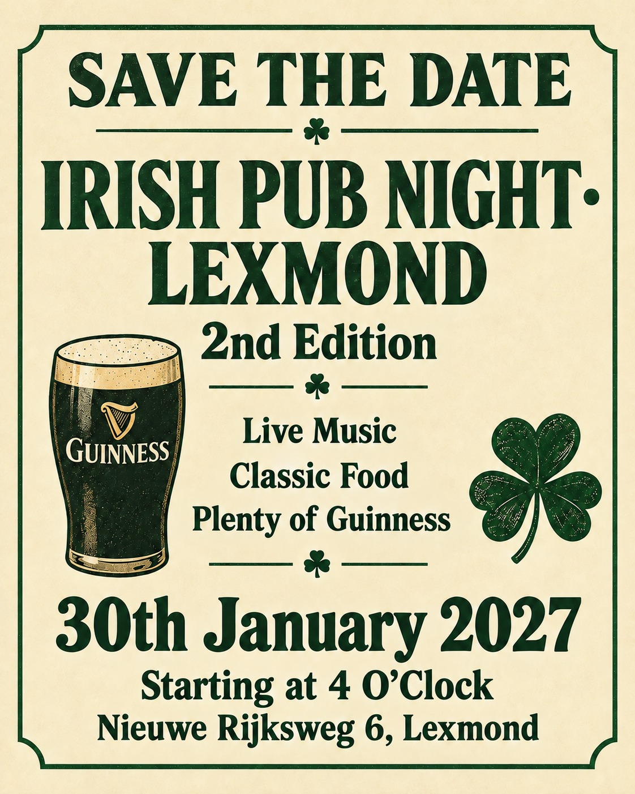

Komende optredens
18 oktober 2026 – De Cultuurschuur, Monster
Tijd: Aanvang 16.00
Openbaar: Ja, Kaarten 10 euro reserveren via info@cultuurschuur.nl
24 oktober 2026 – Het Gasthuis, Gorinchem, Bannenweg 61
Tijd: Aanvang 14.45
Openbaar: Ja
3 december 2026 – Hydepark, Doorn
Tijd: Onbekend
Openbaar: Nee
30 januari 2027 – Nieuwe Rijksweg 6, Lexmond
Tijd: 16.00
Openbaar: Onbekend

11 april 2027 – Kwintsheuvel
Tijd: 15.00
Openbaar: Onbekend
19 april 2027 – Ameide
Tijd: Onbekend
Openbaar: Nee
21 november 2027 – de cultuurschuur, Monster Zwartendijk 11
Tijd: Aanvang 16.00
Openbaar: Ja, Kaarten 10 euro reserveren via info@cultuurschuur.nl